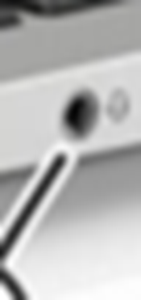
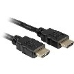
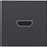

Bonjour, Vous avez une question ? Ci-dessous vous trouvez la foire aux questions.
Je connecte un haut-parleur ou?
On connecte un haut-parleur au port rond avec les écouteurs affichés à côté. Ici on voit une photo.

Je vais utiliser quelle adress e-mail pour poster des vidéos sur youtube ?
On utilise l’adresse e-mail
@immalle.be pour poster des vidéos sur youtube.
Qu’est-ce que je dois faire pour duplicer mon écran avec le projecteur vidéo ?
On connecte le câble HDMI  avec le port HDMI .
Puis, on clique sur .
Ensuite on clique sur déployer et puis on clique sur projecter.
Enfin, on doit cliquer sur duplicer.
Onedrive utilse quelle adress e-mail ?
Onedrive utilse l’addresse e-mail
@immalle.eu.
Un autre question ?
Demandez là au l’adresse e-mail
baue.sebrechts@immalle.be.